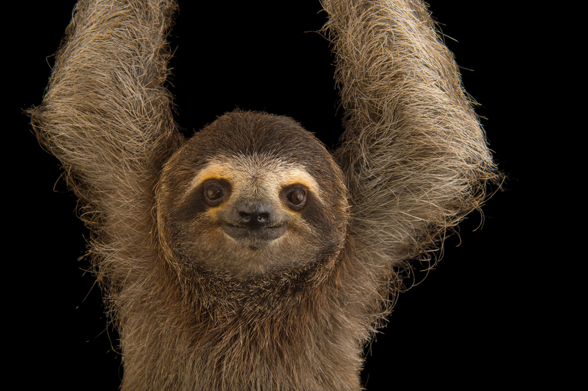
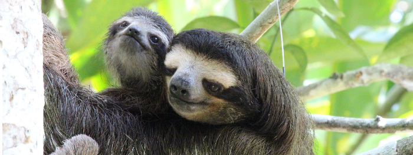
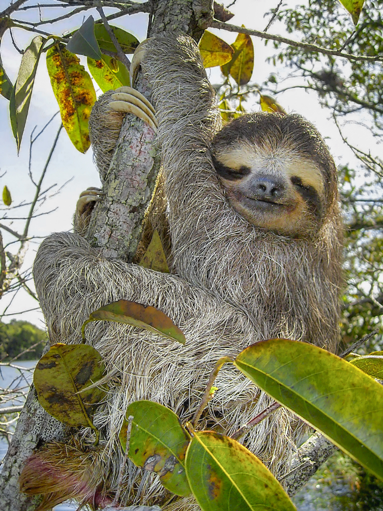
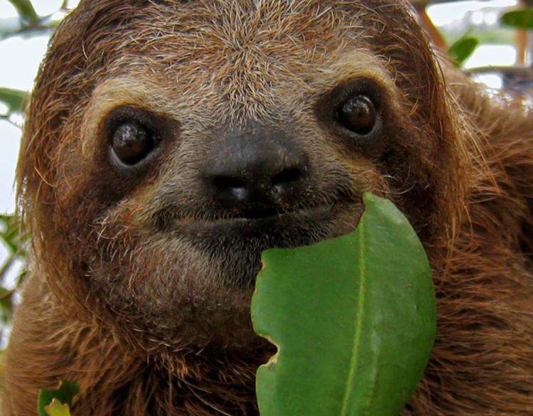

The Three Toed Sloth

The Three Toed Sloth shows off their three front claws.
The Three Toed Sloth shows off their three front claws.
Three-toed sloths are arboreal mammaels, which means 'tree-dwelling'. They are known for their slow movement: they move about 6 to 8 feet a minute. They are not successful with their movement on the ground since their hind legs are weak and their long claws dig in the ground, so they would have to rely on the strength of their front legs to drag them across, and so they spend most of their days hanging upside down in trees or swimming in the waters of South and Central America. Their curved claws allow them to hang from the trees for long periods of time. They also have extra vertebrae in their neck so they are able to turn their neck about 270 degrees. They have short, flat heads and are about the size of a small dog. Although they hang in the trees daily, they come down to the ground once a day to defecate. In general, sloths are defined by how many claws they have on each front foot. Sloths can be identified as either two toed or three toed sloths.

Three Toed Sloth hanging in their home.
Sloths are categorized in the Xenarthra, which are a group of placental mammals. The taxonomic suborder Folivara, of the order Pilosa. The Three-Toed sloth is from the family called the Bradipodidae. The genus called Bradypus only has one category of mammels, which is the Three-Toed sloth. The name “Bradypus tridactylus” is the scientific name for the Three-toed sloth, which means “three-toes”.
Up close and personal with a sloth.

Chart of Sloths Taxonomy.
Fun Fact: Pilosa is Latin for "Leaf-eater" and "Hairy"
A vector illustration of a Three Toed Sloth standing up to demonstrate their anatomy. Note it is hard for sloths to stand
Sloths mate and give birth in trees! Mating begins when a female sloth lets out a scream. IF more than one male sloth answers this call, they will fight for the mating by hanging from the vines and attack by swiping their claws at each other.
An image of a male and female sloth couple.
The average three-toed sloth has a length of 24 to 31 inches long and can weigh anywhere between 7.9 and 17 pounds. They appear to be very hariy and have long legs with round heads, small ears, and stubby tails. Instead of toes, they have three claws on both their front and hind feet. Their fur is often light brown but appears as almost a blue-green due to algae that grows in their environment. They have 8 or 9 central vertebrae. They also have poor visual and hearing activity as well as very low metabolic rates, even while active (86 to 96 degrees farenheight). Their mouths appear as though they are always smiling.
Three-Toed Sloths inhabit both Central and South America in the troipcal Rainforests. They also have a live ecosystem in their fur. Moths and insects live in the fure of the sloth, thus creating algae on their fur. This algae helps the sloth camoflouge itself easily in the troipcal rain forests of Central and South America since both the algae and the rain forests are a blue green color. This algae helps keeps the sloths predators and hunters away.
A vector illustration of where Three-Toed Sloths live: Central and South America.
The Three-Toed sloth has a limited diet of leaves, fruits, and shoots since they spend the majority of their day sleeping in the trees. Due to the fact that they have both poor hearing and vision, when they wake up in the middle of the night to eat, they are luckily able to eat whatever food is available to them. They spend the majoirty of their lives hanging from trees since they cannot walk well on the ground. They eat, sleep, and mate in the trees only coming down to the ground once a week to poop. They have three-toed clothes on both their hind and front legs, which ables them to hang so well from the trees.
A sloth hugging a tree.
A sloth eating it's main source of food: Leaves.
The Pale and Brown throated sloths mate seasonally while the maned sloths mate at anytime. The three-toed sloth is only able to birth one sloth at a time and this can happen every 6 months. They tend to mate during the late summer and early fall and give birth early in the following year. Mating begins when the female lets out a loud scream. If more than one male responds to this scream, they will hang upside down from the trees and swipe at each other with their claws to see who will win the mating call. After the mother sloth gives birth, their baby will cling on to them until they are able to feed themselves. This lasts anywhere from 5 weeks to six months. Baby sloths will stay with their mother from two to four years. In most sloth species, the female matures quicker than the male and is sexually devloped by age three.
The relationship between three-toed sloths and humans is not a pretty one. Since sloths are viewed as adorable animals to the world, stepping foot on the ground puts these creatures at risk of animal-trafficking and being sold as pets.They have to be catious of human hunters, poachers, and electrical lines, especially in Costa Rica, where this is the majority cause of death. The grip of a sloth is so good, that even after death, they will stay hanging on the trees, vines, or electrical lines after death.